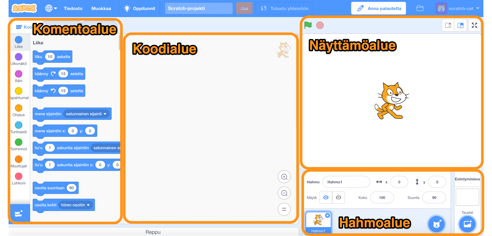
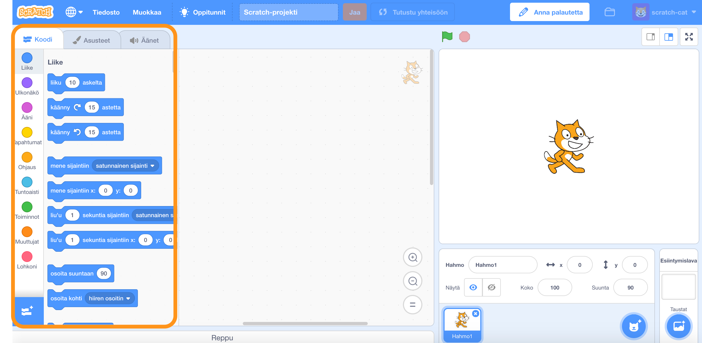
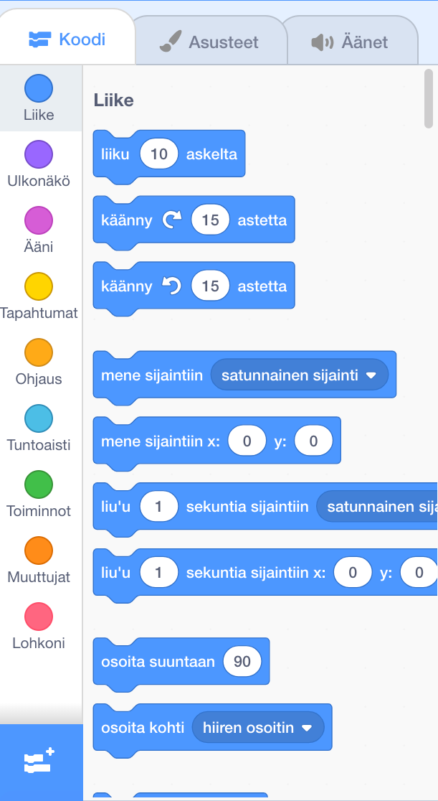
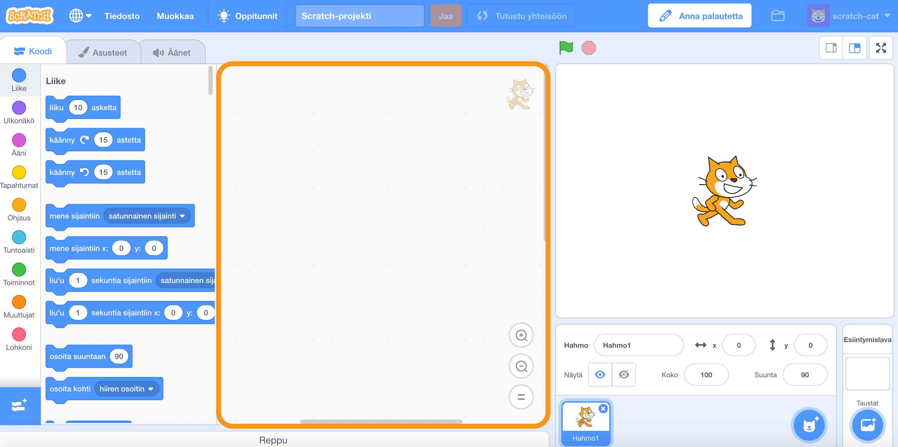
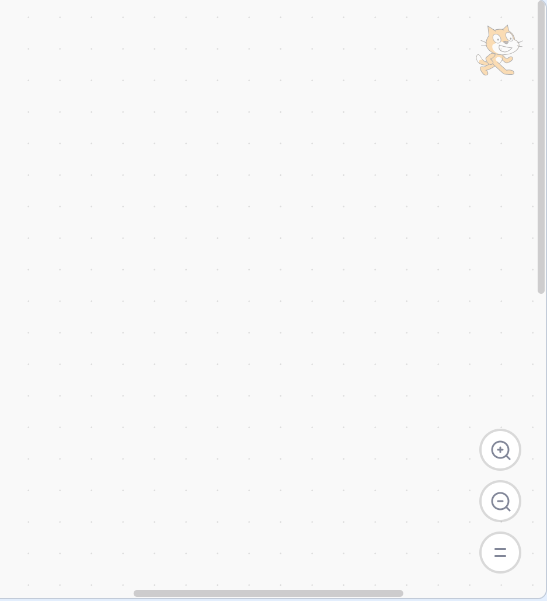
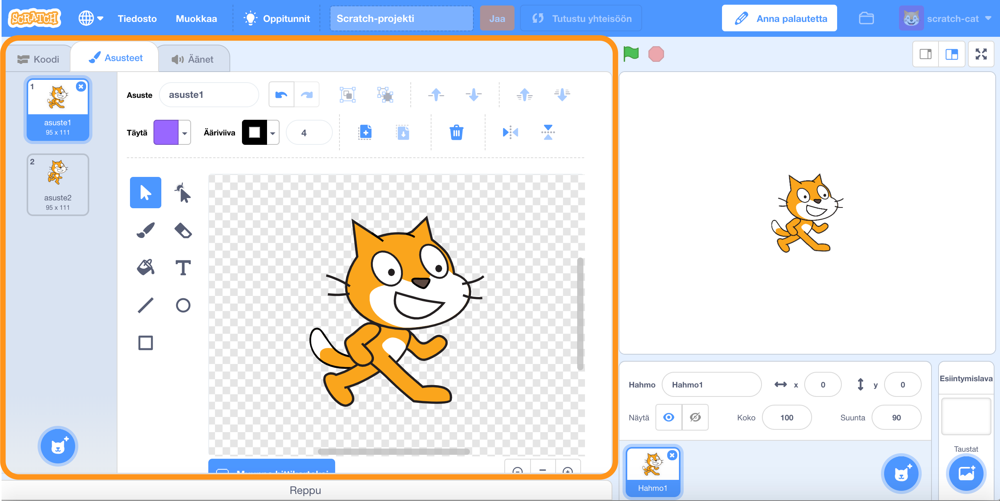
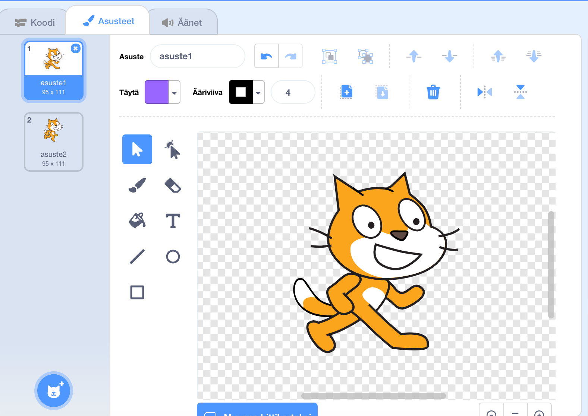
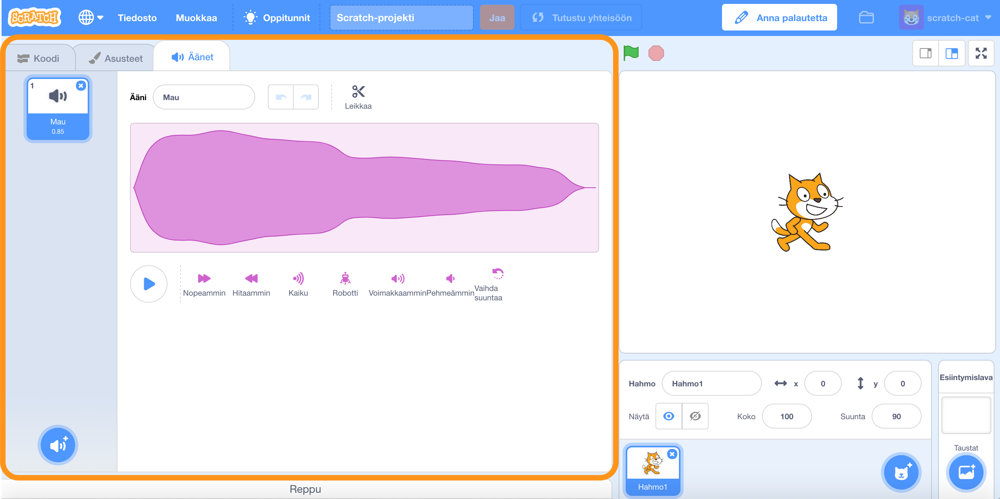
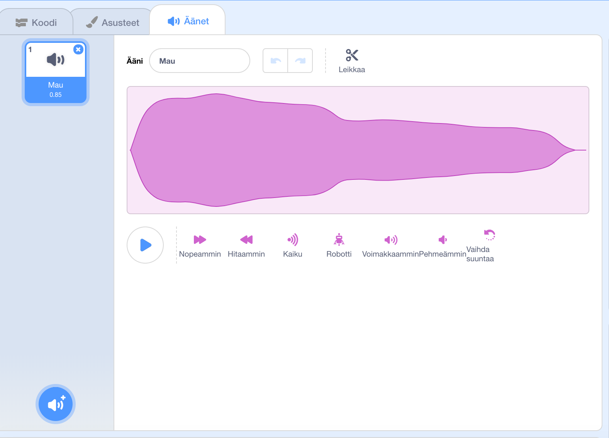
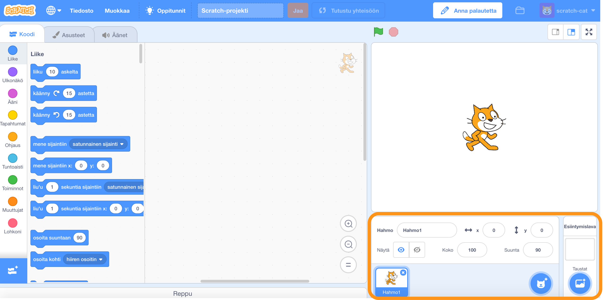

Koodieditorin alueet
Käytämme tällä kurssilla koodieditoria, joka löytyy scratch.mit.edu -sivustosta. Scratch-koodieditori on jaettu erilaisiin alueisiin: Näyttämöalue, Komentoalue, Koodialue(Koodi/Asusteet/Äänet) ja Hahmoalue.
Näyttämö
Näyttämöllä näkee projektin lopputuloksen. Se on projektin tausta. Hahmot (itsetehdyt, ladatut tai hahmokirjastosta löydetyt objektit, jotka suorittavat toimintoja projektissa) eivät voi liikkua Näyttämön alapuolelle. Näyttämö on aina taustalla. Näyttämö on myös hahmo.
Näyttämöllä on kaksi painiketta:
- Vihreä lippu
- Ajaa ohjelman, jos käytetään "kun klikataan vihreää lippua" -palikkaa koodissa ajamaan projektin.
- Stop merkki
- Pysäyttää projektin.
Kuva näyttämöalueesta

Komentoalue
Komentoalueelta voit raahata palikoita hiirellä Koodialueelle ja luoda koodisi. Komentoalueella voit luoda muuttujia, listoja ja jopa luoda uusia palikoita. Koodialueella on 9 palikkaryhmää.
Kuva komentoalueesta
Koodialue
Koodialueella teet koodisi raahamalla palikoita Komentoalueelta Koodialueelle.
Kuva koodialueesta
Asusteet
Asusteet-välilehdellä on lista hahmon asusteista. Voit muokata asusteita kuvaeditorilla. Voit lisätä uusia asusteita Scratchin sisään rakennetusta hahmokirjastosta, tehdä uusia hahmoja kuvaeditorilla, tuoda kuvatiedostoja tai ottaa kuvia laitteellasi.
Asusteet-välilehti
Äänet
Äänet-välilehdellä on lista äänileikkeistä. Voit muokata äänitiedostoja äänieditorilla. Voit lisätä uusia ääniä Scratchin sisään rakennetusta äänikirjastosta, voit äänittää omia ääniä tai tuoda äänitiedoston laitteeltasi.
Äänet-välilehti
Hahmoalue
Hahmoalueella on pienoiskuva kaikista projektissa jo olevista hahmoista. Hahmot voivat olla itse tehtyjä, ladattuja tai hahmokirjastosta löydettyjä, jotka suorittavat toimintoja projektissa. Voit lisätä uusia hahmoja Scratchin sisään rakennetusta hahmokirjastosta, tehdä hahmoja kuvaeditorilla, tuoda kuvatiedoston tai ottaa kuvan laitteellasi.
